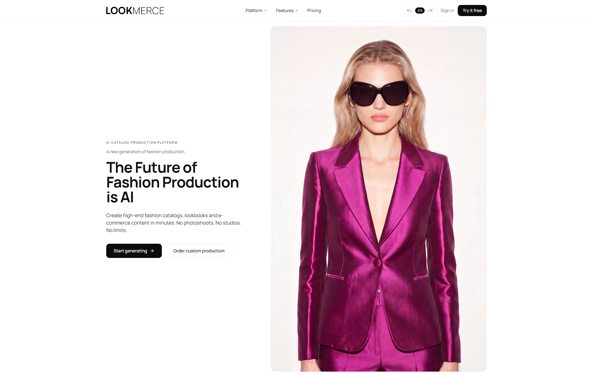
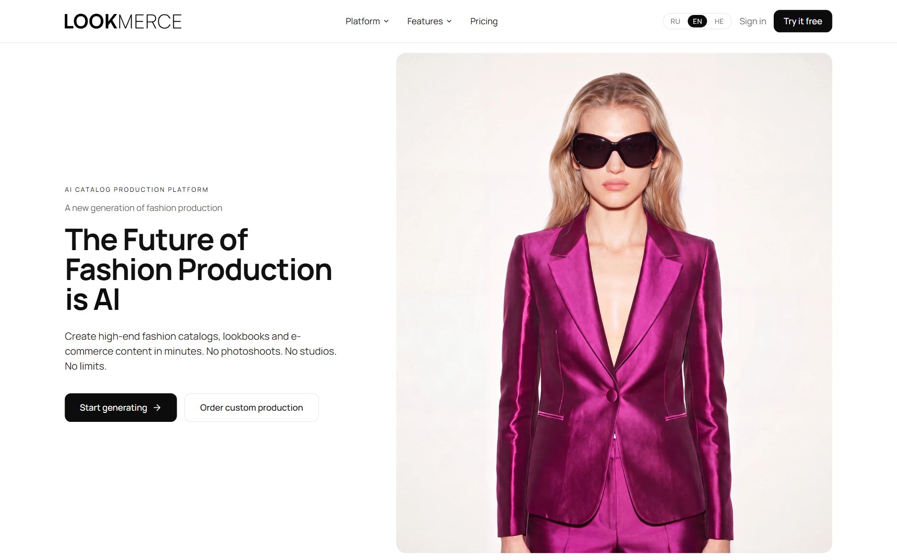
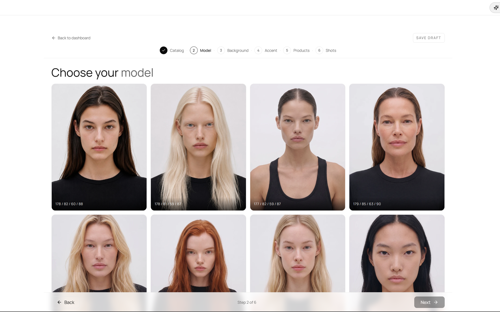
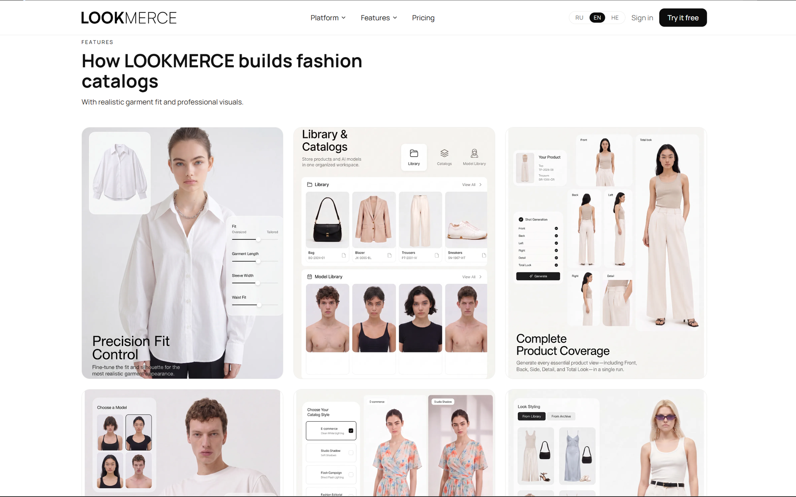

Real enough to sell
Brands only pay for AI shots they could put next to a real photoshoot. Faces, fabric and fit had to look right, not just close
Lookmerce is an AI service that turns one garment photo into a finished catalog: lookbooks, e-commerce shots and campaign visuals without a photoshoot. I designed the website and the generation flow, and helped the team tune the diffusion models behind it
So this case is less about a landing page and more about making AI output something a fashion brand would actually use

A catalog without a photoshoot sounds too good to be true
Brands only pay for AI shots they could put next to a real photoshoot. Faces, fabric and fit had to look right, not just close
One garment photo becomes a catalog through several choices: model, background, accents, shots. Users had no habit for any of them
The landing page had to explain the service and give both small brands and larger teams a way in
Images people believe and a flow people finish mattered more than any layout. I worked on both, and then built the site around the result
I set up and tested the diffusion models for garment edits, tuning them until fabric, drape and fit held up across poses
Knowing what each parameter does, I turned the pipeline into choices a brand understands: model, background, accents, shots. Six steps, no prompts, no sliders
The first screen leads with a generated image, and Start generating and Order custom production sit side by side
We expected a simple path: pick an avatar, pick a garment, see the look, buy it. In tests people spent most of their time on the avatar itself, changing its face, hair, body, pose and background, and much less on the clothes. Nothing was broken technically, but avatar customization had started to compete with shopping. So we made it optional: people now start from a ready avatar preset and try clothes on within seconds, and detailed editing moved to a secondary Edit avatar step after the try-on
Brands get catalog-grade shots through plain interface choices, while the model settings stay behind them
After the changes people reached the first try-on sooner, looked at more products and gave up on avatar setup less often
The site runs in English, Russian and Hebrew, including mirrored right-to-left pages
A compact set of tokens and components kept every page consistent in all three languages


